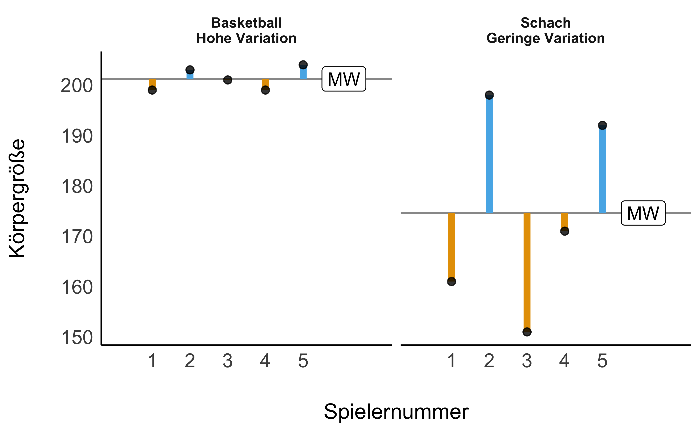

3 Rahmen
3.1 Lernsteuerung
3.1.1 Standort im Lernpfad
Abbildung 1.2 zeigt den Standort dieses Kapitels im Lernpfad und gibt damit einen Überblick über das Thema dieses Kapitels im Kontext aller Kapitel.
Abbildung 3.1 zeigt, dass unser Vorgehen in diesem Buch einem Fließband gleicht: Schritt für Schritt, in der richtigen Reihenfolge, vom Anfang bis Ende, erarbeiten wir unser “Datenprodukt”.

3.1.2 Lernziele
- Sie können eine Definition von Statistik wiedergeben.
- Sie können eine Definition von Daten wiedergeben.
- Sie können den Begriff Tidy-Daten erläutern.
- Sie können Beispiele für verschiedene Skalenniveaus nennen.
3.2 Was ist Statistik und wozu ist sie gut?
Es gibt mehrere Definition von Statistik; hier ist eine.
Definition 3.1 (Statistik) Statistik fasst Daten zusammen, um wesentliche Informationen den Daten zu entnehmen und beschreibt die Ungewissheit unserer Schlüsse Kaplan (2009), Poldrack (2023).\(\square\)
In diesem Buch werden die Begriffe Statistik, Datenanalyse und Data Science synonym verwendet.\(\square\)
Hm. Vielleicht fragen wir mal ChatGPT, was es unter Statistik versteht:
üë® Was ist Statistik? Bitte definiere verst√§ndlich.
ü§ñ Statistik ist eine Wissenschaft, die sich mit der Sammlung, Analyse, Interpretation, Pr√§sentation und √úbertragung von Daten besch√§ftigt. Ziel ist es, Muster und Trends in den Daten zu erkennen und verl√§ssliche Schlussfolgerungen √ºber eine gr√∂√üere Gruppe (z.B. Bev√∂lkerung) auf der Basis einer Stichprobe (Teilmenge) zu treffen. Die Statistik hilft uns bei der Beantwortung von Fragen, indem sie uns dabei hilft, die Unsicherheit in den Daten zu messen und zu verstehen1.
Gute Antwort, oder?
√úbungsaufgabe 3.1 (Nutzen von Statistik) üèãÔ∏è‚Äç‚ôÄÔ∏è Fragen Sie ChatGPT, was der Nutzen von Statistik ist. Diskutieren Sie die Antwort.
Ein zentrales Vorgehen bei statistischen Analysen ist es, die Unterschiedlichkeit der Dinge zu beschreiben, präziser gesagt: die Variation zu quantifizieren. Betrachten wir dazu das Beispiel in s. Abbildung 3.2.

Bei den Basketballern gibt es wenig Variation in der Körpergröße - alle sind groß, ähnlich groß. Bei den Schachspielenr gibt es (im Verhältnis) viel Variation: Einige Personen sind groß, andere klein.
Die Variation (auch “Variabilität” genannt) kann man auch gut so darstellen wie in s. Abbildung 3.3 gezeigt.

Eine Abweichung (auch Residium) genannt, zeigt die Differenz von Mittelwert und dem Wert der Körpergröße bei der jeweiligen Person. Wenn wir allgemein von einer Person \(i\) sprechen, die Körpergröße mit \(x\) bezeichnen und den Mittelwert der Körpergröße als \(\bar{x}\) (“x quer”), dann können wir knapp und präzise das Residuum \(r\) so definieren: \(r_i = x_i - \bar{x}\).
3.3 Was ist das Ziel Ihrer Analyse?
3.3.1 Arten von Zielen
graph TD
subgraph Ziele
A[beschreiben]
B[vorhersagen]
C[erklären]
end
Beispiele für die einzelnen Zielarten der Datenanalyse:
- Beschreiben: “Wie groß ist der Gender-Paygap in der Branche X im Zeitraum Y?”
- Vorhersagen: Wenn ich 100 Stunden auf die Statistikklausur lernen, welche Note kann ich dann erwarten?
- Erklären: Wie viel bringt mir das Lernen auf die Statistikklausur?
3.3.2 Forschungsfrage
Eine Forschungsfrage ist die Leitfrage Ihrer Analyse. Sie definiert, was Sie herausfinden wollen. Häufig sind Forschungsfragen so aufgebaut:
Hat X einen Einfluss auf Y?
Eine Forschungsfrage weist häufig folgende Struktur auf, s. Abbildung 3.5.
graph LR
Input --> X[hier passiert irgendwas]
subgraph "Schwarze Kiste"
X
end
X --> Output
Beispiel 3.1 (Forschungsfrage 1)
Hat Lernen einen Einfluss auf den Prüfungserfolg? Verringert Joggen die Menge des Hüftgolds? Um welchen Betrag erhöht sich der Umsatz, wenn wir 1000€ mehr Werbung ausgeben?\(\square\)
Beispiel 3.2 (Forschungsfrage 2) Nach dem Studium haben Sie bei einem großen Online-Auktionshaus angeheuert. Da Sie angaben, sich im Studium intensiv etwas mit Statistik beschäftigt zu haben, hat man Sie in die F&E-Abteilung2 gesteckt. Heute ist es Ihre Aufgabe, Auktionen zur Spielekonsole Wii zu untersuchen, genauer gesagt, geht es um das Spiel Mariokart. Ihre Forschungsfrage lautet:
Welche Produktmerkmale stehen mit einem hohen Verkaufserlös in Zusammenhang?\(\square\)
Beispiel 3.3 (Aus der Forschung: Smartphone-Brain-Drain) Ward u. a. (2017) untersuchten die Forschungsfrage, ob die bloße Gegenwart eines Handies (z.B. wenn es vor Ihnen auf dem Tisch dazu führt, dass man abgelenkt wird und daher schlechtere kognitive Leistungen zeigt.
Leider schreiben die Autoren Ihre Hypothese nicht glasklar, aber implizit ist obige Hypothese herauszulesen:
First, smartphones may redirect the orientation of conscious attention away from the focal task and toward thoughts or behaviors associated with one’s phone. Prior research provides ample evidence that … that this digital distraction adversely affects both performance … and enjoyment.
Später formulieren Sie Ihre Hypothese noch genauer:
In two experiments, we test the hypothesis that the mere presence of one’s own smartphone reduces available cognitive capacity.
Die Ergebnisse unterstützen Ihre Hypothese, s. Abbildung 3.6. Im Diagramm ist ersichtlich, dass die kognitive Leistung (Y-Achse) sowohl in der Kapazität des Arbeitsgedächtnisses (links) als auch in der fluiden Intelligenz (rechts) am geringsten ist, wenn das Handy auf dem Schreibtisch (Desk) liegt. Am besten ist die kognitive Leistung, wenn das Handy nicht im Raum ist.\(\square\)

Es ist ein häufiger Fehler, in der Forschungsfrage zu formulieren “X führt zu Y”, aber in der Analyse keine Methode zu verwenden, die geeignet ist, kausale Zusammenhänge aufzudecken. Es reicht nicht, dass man z.B. einen (negativen) Zusammenhang zwischen der Häufigkeit von Smartphone-Nutzung und Konzentrationsfähigkeit findet (Schwaiger und Tahir 2022), um zu sagen: “Daddeln macht dumm!”. Es könnte ja z.B. auch umgekehrt sein. Platt gesagt: “Dummheit führt zu Daddeln”. Weitere Erklärungen sind möglich. Vorsicht also mit (vor)schnellen Aussagen zu kausalen Abhängigkeiten.
3.4 Was sind Daten?
Definition 3.2 (Hallo, Daten) Daten kann man als eine geordnete Folge von Zeichen definieren.\(\square\)
Daten kommen häufig in Tabellenform vor; so sind sie am besten zu untersuchen, s. Tabelle 3.1.
So sehen Daten aus.
Die erste Spalte id ist nur eine laufende Nummer. Sie dient dazu, die einzelnen Beobachtungen (hier Studentis) identifizieren zu können und birgt ansonsten keine Information. Beispiele für ID-Variablen sind z.B. Matrikulationsnummer, Personalausweisnummern oder Bestellnumern.
3.4.1 Je mehr, desto besser (?)
Was Daten betrifft, könnte man behaupten: “Viel hilft viel” oder “Je mehr, desto besser”. Natürlich unter sonst gleichen Umständen3. Viel Datenmüll ist natürlich nicht besser als ein paar knappe, wasserdichte Fakten!
Beispiel 3.4 Um Ihre eigene Lehraktivität zu organisieren, wollen Sie sich ein Bild machen, wie viel Ihre Nebensitzer im Hörsaal so lernen. Sie blicken nach links und fragen “wie viel lernst du so?”. Sie blicken nach recht und wiederholen die Frage gerichtet an den rechtsnebensitzenden Kommilitonen. Dann addieren Sie die zwei Zahlen (unter der Annahme, dass Sie zwei Zahlen bekommen haben), und teilen durch zwei, um den Mittelwert zu erhalten.
Ein kritischer Geist könnte anmerken, dass Sie besser die Untersuchung nicht gemacht hätten (auch wenn Sie, vielleicht ohne zu wollen, eine statistische Untersuchung angestellt haben). Denn bei so wenig befragten Personen ist die Ungenauigkeit Ihrer Schätzung der typischen Lernzeit bei Studentis einfach zu hoch.\(\square\)
Abbildung 3.7 veranschaulicht, dass man einen Mittelwert genauer schätzen kann, wenn man auf eine größere Stichprobe zurückgreift.

Bildquelle: Karsten Lübke
Beispiel 3.5 (Daten zur Forschungsfrage 2) Hier ist ein Auszug der Daten zur Tabelle mariokart, s. Tabelle 4.1.
Auszug aus der Tabelle mariokart
Eine Erklärung aller Variablen findet sich hier. Eine Erklärung, was die Namen einer Datentabelle bedeuten, nennt man Code Book or Data Dictionary.\(\square\)
Sie haben ein tolles Experiment durchgeführt, viel Arbeit, viel Stress, endlich geschafft, puh. Von den 20 Variablen (als AV, s. Kapitel 3.5), die Sie untersucht haben, zeigt nur 1 einen interessanten Effekt, leider. 1 von 20, das hört sich nicht so toll an. Wäre es da nicht “elegant”, die 19 Variablen ohne schönen Effekt einfach in der Schublade liegen zu lassen bis zum Sankt-Nimmerleins-Tag? Dann könnten Sie stattdessen als Ergebnis nur die eine Variable mit schönen Ergebnis präsentieren, ganz ohne widersprechende Befunde.
Dieser Versuchung nicht zu erliegen, kann schwer sein. Es ist aber gefährlich, missliebige Ergebnisse zu verschweigen: Die anderen Menschen bekommen dann ein falsches Bild der Ergebnislage; man spricht von Publikationsbias. Wer Ergebnisse verschweig, verzerrt die insgesamte Befundlage.
3.4.2 Was ist eine Variable?
Definition 3.3 (Variable) Eine Variable ist ein Platzhalter, der für ein Merkmal steht, das verschiedene Werte annehmen kann.\(\square\)
Man kann sich eine Variable wie einen Behälter vorstellen, auf dem mit einem Stift geschrieben steht, was für eine Art Inhalt darin ist, s. Abbildung 3.8.

3.4.3 Beobachtungseinheit
Definition 3.4 (Beobachtungseinheit) Beobachtungseinheiten sind die Dinge, die wir untersuchen (beobachten). Beobachtungseinheiten sind die Träger von Variablen.\(\square\)
In Tabelle 3.1 gibt es drei Variablen: id, Name und Note. Es gibt auch drei Beobachtungseinheiten: Anna, Berta und Carla.
3.4.4 Wert
Definition 3.5 Ein Wert ist der Inhalt einer Variablen.\(\square\)
In Abbildung 3.8 ist der Wert von temp 9.
In Tabelle 3.1 hat die Variable name drei Elemente: Anna, Berta, Carla. Der Wert des 2. Elements ist Berta.
Als Ausprägungen bezeichnet man die verschiedenen Werte einer Variablen.
Beispiel 3.6 In einer Studie wurden zehn Probanden untersucht. Die Variable geschlecht dokumentiert die Geschlechter der Personen:
geschlecht <- c("Mann", "Frau", "Frau", "Frau", "Mann",
"Frau", "Mann", "Mann", "divers", "Frau")
geschlecht
## [1] "Mann" "Frau" "Frau" "Frau" "Mann" "Frau" "Mann" "Mann"
## [9] "divers" "Frau"In dieser Variable (die aus 10 Werten besteht) finden sich drei Ausprägungen: divers, Frau, Mann.\(\square\)
Gerade haben Sie etwas Computer-Syntax gesehen, genauer gesagt, Befehle aus der Programmiersprache R. Bisher haben wir diese Befehle nicht kennengelernt. Sie verstehen Sie vermutlich (nicht ganz). Ignorieren Sie diese Befehle einfach erstmal.
3.4.5 Tidy-Data
Definition 3.6 Unter Tidy-Data (tidy data, “Normalform”) versteht man eine Tabelle, in der jede Zeile eine Beobachtungseinheit darstellt, jede Spalte eine Variable und jede Zelle der Tabelle einen Wert, s. Abbildung 3.9 (a). (Zusätzlich ist noch eine “Kopfzeile” erlaubt, in der die Namen der Variablen stehen.)\(\square\)
Tabelle 3.1 ist ein Beispiel für Tidy-Data. Abbildung 3.9 (a) zeigt ein Sinnbild für Tidy-Data (Wickham und Grolemund 2018). Und Abbildung 3.9 (b) erläutert das Tidy-Prinzip genauer.


Für eine statistische Analyse ist es fast immer nötig, dass die Daten im Tidy-Format vorliegen.
Der Vorteil des Tidy-Formats ist es, dass man weiß, wie die Daten aufgebaut sind. Außerdem können Statistikprogramme oft mit dieser Form am besten umgehen, s. fig-tidy3.

Das Tidy-Format wird auch als “langes” Format bezeichnet.
Abbildung 3.11 zeigt einen Datensatz in der “langen” Form, also tidy, und den gleichen Datensatz, umformatiert in der “breiten” Form, nicht-tidy.

In fast allen Organisationen werden Exceltabellen zur Datenverarbeitung verwendet. Dabei wiederholen sich immer wieder die gleichen Fehler bzw. suboptimalen Vorgehensweise zum Aufbau einer Exceltabelle.
Dieser Artikel von Broman und Woo (2018) zeigt anhand einiger praktischer Tipps, wie man Exceltabellen so aufbaut, dass Fehler minimiert werden.
3.5 Arten von Variablen
3.5.1 Nach Position in der Forschungsfrage
Angenommen, Ihre Forschungsfrage lautet:
Hat Lernen einen Einfluss auf den Prüfungserfolg?
In dem Fall gilt:
- Lernen ist die Inputvariable/X-Variable/Ursache/UV
- Prüfungserfolg ist die Outputvariable/Y-Variable/Wirkung/AV
Abbildung 3.12 stellt diese beiden “Positionen” einer Variable dar. Die erste Position ist vor dem Pfeil. Die zweite Position ist nach dem Pfeil.
graph LR
Input --> Output
X --> Y
P[Prädiktor] --> K[Kriterium]
Ursache --> Wirkung
UV[unabhängige Variable] --> AV[abhängige Variable]
3.5.2 Nach dem Skalenniveau
Abbildung 3.13 gibt einen Überblick über typisch verwendete Skalenniveaus.
graph TD
Variablen --> qualitativ
Variablen --> quantitativ
qualitativ --> nominal
qualitativ --> ordinal
quantitativ --> Intervallniveau
quantitativ --> Verhältnisniveau
3.5.3 Beispiele für Skalenniveaus
Beispiele zu den Skalenniveaus sind in Tabelle 3.3 aufgeführt.
Beispiele für Skalenniveaus
\(\square\)
Je nach dem, über welches Skalenniveau eine Variable verfügt, sind verschiedenen Rechenoperationen erlaubt, s. Tabelle 3.4.
Erlaubte Rechenoperationen nach Skalenniveau
Was soll das bedeuten, “Rechenoperationen”?
Schauen wir uns für jedes Skalenniveau ein “Rechenbeispiel” an.
Nominalskala: Die Variable Geschlecht ist nominalskaliert. Das bedeutet, dass ihre Ausprägungen Frau und Mann z.B. nicht (sinnvoll) addiert oder sonswie “verrechnet” werden können. Man könnte, z.B. um das Eintippen zu erleichtern, Frauen mit 1 kodieren und Männer mit 2. Damit darf man aber nicht rechnen! Es macht keinen Sinn zu sagen: “Ich habe eine Frau und einen Mann in meiner Tabelle, das ist im Schnitt ein diverses Geschlecht, weil der Mittelwert von 1 und 2 ist 1,5!”
Die einzige “Rechenoperation”, die man auf der Nominalskala machen darf, ist die Prüfung auf Gleichheit: Mann kann feststellen, ob ein Objekt gleich zu einem anderen ist oder unterschiedlich. Also ob zwei Personen das gleiche Geschlecht haben oder von unterschiedlichem Geschlecht sind. Etwas formaler ausgedrückt:
- üë© \(\ne\) üë®
- üë© \(=\) üë©
- üë® \(=\) üë®
Ordinalskala: Diese Skala entspricht einer Rangordnung. Eine Rangordnung ist etwa die geordnete Abfolge Ihres Leibgerichte4. Etwas formaler ausgedrückt:
- üçï \(\succ\) üçù \(\succ\) ü•©
Das komische Zeichen \(\succ\) soll heißen: “Ist auf meiner Liste von Leibgerichten weiter oben, mag ich lieber”. Man kann aber nicht sagen, “Ich mag aber Pizza um 42% mehr als die Spagetthi und die wieder um 73% mehr als ein Schnitzel!”. Zumindest kann man das nicht ohne weitere Informationen und Annahmen. Es gibt also Dinge auf der Welt, die man leicht in eine Rangordnung bringen kann, aber die man nur schwer in der Größe der Unterschiede bemessen kann. Das ist die Ordinalskala, s. Abbildung 3.14.

Intervallskala: Das ist vielleicht eine Überraschung für Sie: Wenn es heute 10°C hat und morgen 5°C – dann ist es heute nicht doppelt so warm wie morgen. Ja, 10 ist das Doppelte von 5. Aber 10° Celcius ist nicht doppelt so warm wie 20° Celcius. Wenn Sie das verwundert: Das ist normal, so geht es den meisten, wenn sie das zum ersten Mal hören. Der Grund, dass es nicht erlaubt ist, Verhältnisse (wie doppelt/halb so viel etc.) auf der Celcius-Skala zu bilden, ist, dass der Nullpunkt der Skala, 0° C, kein echter, physikalischer Nullpunkt ist. Bei 0° C liegt eben nicht Null Wärmeenergie vor. Stattdessen wurde eine Wärmenergiemenge gewählt, die für uns Menschen ganz praktisch, da augenfällig ist: der Gefrierpunkt von Wasser. Was bei der Intervallskala erlaubt ist, ist das Addieren (und Subtrahieren): heute 10°C, morgen 5°C, das ist ein Unterschied von 5°C. Oder: Im Schnitt waren es 7,5°C, das ist genau in der Mitte von 5 und 10°C. Abbildung 3.15 versinnbildlicht die Intervallskala.

Verhältnisskala: Eine Verhältnisskala ist das, was man sich gemeinhin unter einer metrische Variable vorstellt: Man kann “normal” rechnen, alle Rechenoperationen sind erlaubt. Zuzüglich zu denen, die auch in anderen, “niedrigeren” Skalenniveaus erlaubt sind, ist das das Bilden von Verhältnissen - Multiplizieren, s. Abbildung 3.16.

In diesem Video gibt es noch ausführlichere Erklärung zum Thema Skalenniveaus.
Außerdem können quantitative Variablen untergliedert werden in:
- stetige Variablen, das sind Variablen, bei denen man zwischen zwei Ausprägungen immer noch eine weitere quetschen kann. So gibt es eine Wert für die Köpergröße zwischen 1.60m und 1.61. Und einen Wert zwischen 1.601m und 1.602m, etc.
- diskrete Variablen, das sind metrische Variablen, die nur bestimmte Ausprägungen haben, häufig sind das die natürlichen Zahlen: \(1,2,...\). Ein Beispiel wäre die Anzahl der Kinder in einer Familie.
Fragen nach Skalenniveaus gehören zu den Lieblingsprüfungsfragen in diesem Themenbereich. Sie sind gut beraten, sich gerade mit dieser Frage intensiver zu beschäftigen. Auch in thematisch angrenzenden Fächern wird immer wieder die Frage nach dem Skalennvieau aufgeworfen. Das zeigt natürlich auch die hohe Relevanz des Themas.
3.6 Modelle
Woran denken Sie beim Wort “Modell”? Vielleicht an Spielzeugautos, s. Abbildung 3.17.

Definition 3.7 (Modelle) Modelle sind ein vereinfachtes Abbild der Realität eine Repräsentation (Kaplan 2009).\(\square\)
Beispiel 3.7 (Beispiele für Modelle) Puppen sind Modelle für Babies, Landkarten für Landstriche und das Atommodell von Nils Bohr ist ein Modell für Atome.\(\square\)
Auch in der Statistik nutzen wir Modelle. Helfen Sie Prof. Weiss-Ois: Er blickt nicht durch. Gerne würde er wissen, wie viele Stunden seine Studentis auf die Prüfung lernen. Aber mit so vielen Zahlen kann er nicht umgehen … Geben Sie ihm ein Modell: Sagen Sie ihm, wie lang die Studis typischerweise lernen (sagen Sie ihm ein einfach den Mittelwert der Lernzeiten).
3.6.1 Vorher
12, 8, 10, 11, 10, 9, 13, 9, 14, 9, 12, 14, 7, 9, 9, 11, 9, 4, 5, 12, 9, 6, 9, 12, 13, 9, 9, 6, 10, 8

3.6.2 Nachher
9.6
Icon unter Flaticon licence, Autor: iconixar
Der Nutzen von Modellen ist, dass sie komplexe Sachverhalte vereinfachen und damit oft überhaupt erst dem Verständnis oder einer Untersuchung zugänglich machen: Modelle ermöglichen Verständnis. In der Datenanalyse bzw. Statistik5 fassen Sie oft viele Daten prägnant zusammen, z.B. zu einer einzelnen Kennzahl. Das Verrückte an Modellen ist, dass man Informationen wegwirft, um eine (andere, hoffentlich nützlichere) Information zu bekommen (Stigler 2016). Weniger ist mehr?!
3.7 Nomenklatur
In diesem Buch werden ein paar (wenige) griechische Buchstaben verwendet, die in der Statistik üblich sind.
Häufig werden griechische Buchstaben verwendet, um eine Grundgesamtheit (Population) zu beschreiben (die meistens unbekannt ist). Lateinische (“normale”) Buchstaben werden demgegenüber verwendet, um eine Stichprobe (Datensatz, vorliegende Daten) zu beschreiben.
Tabelle 3.5 stellt diese Buchstaben zusammen mit ihrer Aussprache und Bedeutung vor.
| Zeichen | Aussprache | Buchstabe | Bedeutung in der Statistik |
|---|---|---|---|
| \(\beta\) | beta | b | Regressionskoeffizent |
| \(\mu\) | mü | m | Mittelwert |
| \(\sigma\) | sigma | s | Streuung |
| \(\Sigma\) | Sigma | S | Summenzeichen |
| \(\rho\) | rho | r | Korrelation (nach Pearson) |
Mehr griechische Buchstaben finden sich hier.
3.8 Praxisbezug
Wir leben im Datenzeitalter; Daten durchdringen alle Bereiche des beruflichen, gesellschaftlichen und privaten Lebens. Die Datenanalyse hat sich in den letzten Jahren massiv verändert, s. Abbildung 3.18.

Diese Entwicklung ist durchaus auch kritisch zu betrachten. Mit der wachsenden Bedeutung von Daten wächst in gleichem Maße die Bedeutung von Datenanalyse. Denn Daten ohne Sinn sind nutzlos. Aus diesem Grund kann man sagen, dass Datenanalyse (und damit auch Statistik als eine spezielle Art von Datenanalyse) zu stark nachgefragten Jobs gehören.
Laut dem Entgeltatlas der Bundesagentur für Arbeit liegt ein typisches Gehalt von Data Scientisten bei knapp 6000 € pro Monat (in der Altersgruppe von 25 bis 54)6. Laut dem Gehaltsreporter liegt das Einstiegsgehalt dieser Berufsgruppe bei knapp 50.000€ pro Jahr.
3.9 Fazit
Die Aufgabe von Statistik ist es, durch Zusammenfassen von Daten Modelle zu bilden, die es uns einfacher machen, schwierige Sachverhalte zu verstehen. Zentral ist dabei, die Analyse von Variabilität der Daten. Daten kommen in verschiedenen Varianten vor, typischerweise in Tabellenform, möglichst im Tidy-Format.
3.10 Aufgaben
3.11 Vertiefung
Fassen Sie den Artikel von Broman und Woo (2018) zusammen.
Inspiration von einer Praktikerin der Datenanalyse: Caitlin Hudon verrät in diesem Video, welche Fehler Sie sie in in den acht Jahren ihrer Berufserfahrung gemacht hat und was sie daraus gelernt hat.